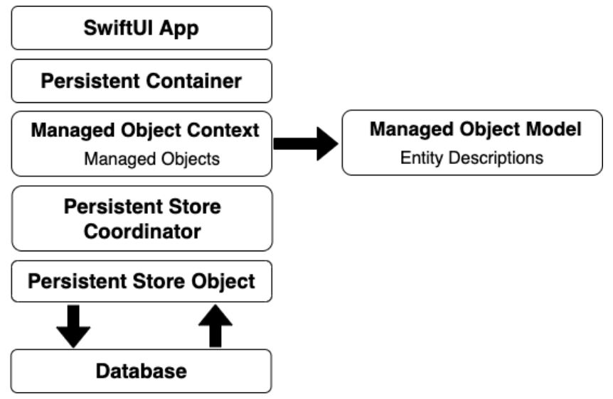

Core Data et SwiftUI
Introduction
Dans le développement iOS, il est courant de stocker des données structurées (par exemple, listes de contacts, tâches, produits, etc.).
Problème avec les bases de données traditionnelles :
Utiliser directement des bases de données embarquées comme SQLite nécessite des connaissances en SQL et engendre une complexité dans le code (nature non orientée objet).
Solution proposée par Apple :
Core Data est un framework qui permet de travailler avec les données sous forme d’objets Swift. Il encapsule les interactions avec la base de données (par défaut SQLite) et simplifie le traitement des données en éliminant la nécessité de maîtriser le SQL.
Les Principaux Composants de Core Data (Core Data Stack)
La Stack Core Data se compose de plusieurs objets qui travaillent ensemble pour gérer le stockage persistant :
Référence : Neil Smyth. iOS 18 App Development Essentials. Payload Media, Inc.
Persistent Container
Rôle :
Persistent Container gère la création de la pile Core Data et est conçu pour être facilement sous-classé afin d'ajouter des méthodes spécifiques à l'application à la fonctionnalité de base de Core Data. Une fois initialisé, l'instance de conteneur persistant fournit l'accès au contexte de l'objet géré.
Fonctions clés :
- • Créer le modèle de données (via un fichier .xcdatamodeld).
- • Charger les persistent stores (SQLite, XML, binaire ou mémoire).
- • Fournir le Managed Object Context via la propriété viewContext pour interagir avec les objets gérés.
Managed Object Context (MOC)
Rôle :
Le MOC agit comme une zone tampon qui contient les objets gérés (instances de NSManagedObject ou de ses sous-classes) avec lesquels l’application interagit.
Fonctions clés :
- • Gérer les objets et leurs états (nouveaux, modifiés, supprimés).
- • Conserver temporairement les changements avant de les sauvegarder dans le persistent store.
- • Effectuer des fetch requests pour récupérer des données selon des critères donnés.
Managed Object Model
Rôle :
Il définit la structure des données sous forme d’entités (semblables aux tables dans une base de données relationnelle).
Contenu :
- • Entités (Entities) : Par exemple, une entité “Contacts” avec des attributs comme “name”, “address” et “phone”.
- • Attributs (Attributes) : Définit le type de données à stocker pour chaque entité.
- • Relations (Relationships) : Permettent de définir des liens entre différentes entités (one-to-one, one-to-many, many-to-many).
Persistent Store Coordinator
Rôle :
Il gère les persistent stores (fichiers de stockage) et coordonne les interactions entre le MOC et le store.
Fonctions clés :
- • Charger et sauvegarder les données dans le store.
- • Effectuer des migrations de données lors de changements de modèle.
- • Permettre l’utilisation de plusieurs stores pour une même application.
Persistent Store
Rôle :
C’est le support de stockage réel. Par défaut une database SQLite.
Fonctions clés :
- • Le choix du type de store (SQLite, XML, binaire ou mémoire) est généralement transparent pour le développeur.
Création et édition du modèle de données
Définition du modèle d’entités dans Xcode
Lors de la création d’un projet avec Core Data, Xcode génère un fichier .xcdatamodeld. Ce fichier sert de modèle pour structurer les données que l’application va gérer. Il définit les entités, leurs attributs, et les relations entre elles, permettant ainsi à Core Data d'interpréter et manipuler ces objets.


Exemple de modèle d'entités dans Xcode.
Pourquoi utiliser un modèle d’entités ?
- • Il simplifie la gestion des données en représentant les objets sous forme de modèles Swift.
- • Il permet d'automatiser les opérations CRUD (Create, Read, Update, Delete) sans écrire du SQL.
- • Il assure l'intégrité et la cohérence des données en définissant des contraintes et des relations.
Ce fichier vous permet de :
- • Ajouter des entités (cliquez sur “Add Entity”).
- • Définir des attributs pour chaque entité (nom, type, contraintes, etc.).
- • Établir des relations entre entités (ex. : un produit appartient à une catégorie).
Étapes pour définir une entité :
- Ouvrez le fichier .xcdatamodeld dans Xcode.
- Cliquez sur “Add Entity” en bas du panneau de gauche.
- Renommez l’entité par un nom significatif (ex. : “Product” pour stocker des informations sur les produits).
- Ajoutez des attributs en cliquant sur le bouton “+” sous la section Attributes.
- Définissez le type de chaque attribut :
- • String : Pour stocker du texte (ex. : nom du produit).
- • Integer : Pour stocker des nombres entiers (ex. : stock disponible).
- • Double : Pour stocker des nombres décimaux (ex. : prix).
- • Date : Pour enregistrer une date (ex. : date d’ajout).
- • Boolean : Pour des valeurs vraies ou fausses (ex. : disponible en stock ?).
- Si nécessaire, établissez des relations avec d'autres entités en utilisant l’onglet “Relationships”. Par exemple, une entité “Product” peut être liée à une entité “Category” avec une relation one-to-many (un produit appartient à une seule catégorie, mais une catégorie contient plusieurs produits).
Conclusion
Core Data simplifie la gestion des données en encapsulant les opérations de base de données. En définissant un modèle clair, en utilisant les fonctionnalités de persistance et en effectuant des requêtes optimisées, il est possible de créer des applications performantes et évolutives.
Créer un projet SwiftUI avec Core Data
Créer le projet « CoreDataDemo »
- Lancez Xcode et cliquez sur «Create a new Xcode project».
- Sélectionnez «IOS» et «App».
- Donnez un nom à votre projet, par exemple «CoreDataDemo».
- Ne cochez pas l’option «Core Data» dans la partie Storage. Laissez-la sur «None».
- Sélectionnez l’emplacement de sauvegarde, puis cliquez sur «Finish».
Objectif : Nous allons ajouter manuellement tous les éléments nécessaires à l’utilisation de Core Data.
Ajouter le modèle de données (.xcdatamodeld)
Comme nous n’avons pas coché l’option Core Data, Xcode n’a pas créé de fichier .xcdatamodeld par défaut. Nous allons le créer nous-mêmes.
- Appuyez sur Cmd+N pour créer un nouveau fichier.
- Dans la section iOS, cherchez la rubrique Core Data.
- Sélectionnez « Data Model » puis cliquez sur « Next ».
- Donnez un nom au fichier, par exemple « Products ».
- Cliquez sur « Create ».
- Vous verrez apparaître un fichier Products.xcdatamodeld dans votre arborescence.
Définir une entité (Entity)
- Ouvrez Products.xcdatamodeld.
- Dans la fenêtre principale, cliquez sur « Add Entity » en bas.
- Renommez l’entité « Product » (double-clic sur le nom par défaut).
- Dans la section Attributes, cliquez sur + pour ajouter un attribut :
- name (String) : pour le nom du produit.
- quantity (String) : pour stocker la quantité du produit (vous pourriez utiliser un entier, mais on reste simple).
Votre modèle de données contient désormais une entité Product avec deux attributs : name et quantity.
Créer la structure PersistenceController
Maintenant, nous allons créer un fichier Swift pour configurer la stack Core Data
- Appuyez sur Cmd+N pour créer un nouveau fichier Swift.
- Nommez ce fichier Persistence.swift et enregistrez-le à la racine de votre projet.
- Ajoutez le code suivant :
import CoreData struct PersistenceController { static let shared = PersistenceController() let container: NSPersistentContainer init() { // « Products » correspond au nom du fichier .xcdatamodeld (sans l’extension) container = NSPersistentContainer(name: "Products") container.loadPersistentStores { (storeDescription, error) in if let error = error as NSError? { // En cas d’erreur, on arrête l’application (fatalError) // Pour une app de production, on gérerait l’erreur différemment fatalError("Échec du chargement du store: \(error)") } } } }
Explications :
- • NSPersistentContainer : représente l’ensemble de la pile Core Data.
- • container.loadPersistentStores : initialise la base de données (SQLite par défaut) et gère les erreurs éventuelles.
Injecter le Managed Object Context dans SwiftUI
Dans votre fichier CoreDataDemoApp.swift, on va utiliser le PersistenceController pour fournir le viewContext aux vues SwiftUI.
import SwiftUI
@main
struct CoreDataDemoApp: App {
let persistenceController = PersistenceController.shared
var body: some Scene {
WindowGroup {
ContentView()
// On injecte le viewContext dans l’environnement
.environment(\.managedObjectContext, persistenceController.container.viewContext)
}
}
}
Avantage : Toutes les vues pourront accéder à @Environment(\.managedObjectContext) pour créer, lire ou supprimer des objets.
Mettre en place l’interface (ContentView.swift)
import SwiftUI
import CoreData
struct ContentView: View {
// Champs de saisie pour le nom et la quantité
@State private var name = ""
@State private var quantity = ""
// Récupération du contexte Core Data via l’environnement
@Environment(\.managedObjectContext) private var viewContext
// FetchRequest pour récupérer tous les Product
@FetchRequest(
entity: Product.entity(),
sortDescriptors: [] // On pourra ajouter un tri plus tard
)
private var products: FetchedResults< Product >
var body: some View {
NavigationStack {
VStack {
TextField("Nom du produit", text: $name)
TextField("Quantité", text: $quantity)
.keyboardType(.numberPad)
HStack {
Spacer()
Button("Add") {
addProduct()
}
Spacer()
Button("Clear") {
name = ""
quantity = ""
}
Spacer()
}
.padding()
// Affichage de la liste des produits
List {
ForEach(products) { product in
HStack {
Text(product.name ?? "Inconnu")
Spacer()
Text(product.quantity ?? "0")
}
}
.onDelete(perform: deleteProducts)
}
.listStyle(.plain)
}
.padding()
.textFieldStyle(RoundedBorderTextFieldStyle())
.navigationTitle("Inventaire")
}
}
}
Explications :
- • @FetchRequest : récupère tous les objets Product de la base, mis à jour en temps réel.
- • Liste : affiche chaque Product.
- • onDelete : permet de supprimer un produit en glissant vers la gauche.
Ajouter les fonctions Core Data (ajout/suppression)
Toujours dans ContentView :
extension ContentView {
private func addProduct() {
withAnimation {
let newProduct = Product(context: viewContext)
newProduct.name = name
newProduct.quantity = quantity
saveContext()
}
}
private func deleteProducts(offsets: IndexSet) {
withAnimation {
offsets.map { products[$0] }.forEach(viewContext.delete)
saveContext()
}
}
private func saveContext() {
do {
try viewContext.save()
} catch {
// Arrêt brutal si erreur (fatalError)
// En production, on afficherait un message d’erreur plus propre
fatalError("Erreur lors de la sauvegarde : \(error)")
}
}
}
Explications :
- • addProduct() : crée un objet Product, assigne name et quantity, puis appelle saveContext().
- • deleteProducts(offsets:) : supprime les produits sélectionnés dans la liste, puis sauvegarde.
- • saveContext() : tente de sauvegarder les changements. En cas d’erreur, on arrête l’application (vous pourriez faire autrement).
Améliorations possibles
Trier les produits
Pour trier par ordre alphabétique, on peut ajouter un NSSortDescriptor :
@FetchRequest(
entity: Product.entity(),
sortDescriptors: [NSSortDescriptor(key: "name", ascending: true)]
)
private var products: FetchedResults< Product >
Rechercher un produit
On peut créer une vue de recherche (ResultsView) qui utilise un NSPredicate :
struct ResultsView: View {
var name: String
var viewContext: NSManagedObjectContext
@State var matches: [Product]?
var body: some View {
VStack {
List {
ForEach(matches ?? []) { match in
HStack {
Text(match.name ?? "Not found")
Spacer()
Text(match.quantity ?? "Not found")
}
}
}
.navigationTitle("Results")
}
.task {
let fetchRequest: NSFetchRequest = Product.fetchRequest()
fetchRequest.entity = Product.entity()
// CONTAINS[cd] = insensible à la casse et aux accents
fetchRequest.predicate = NSPredicate(format: "name CONTAINS[cd] %@", name)
matches = try? viewContext.fetch(fetchRequest)
}
}
}
Cela permet d’afficher uniquement les produits selon le nom.
ContentView
On peut ajouter des boutons pour accéder à la vue de recherche :
...
HStack {
Spacer()
Button("Add") {
addProduct()
}
Spacer()
NavigationLink(destination: ResultsView(name: name, viewContext: viewContext)) {
Text("Find")
}
Spacer()
Button("Clear") {
name = ""
quantity = ""
}
Spacer()
}
...
Création de la vue de modification (EditProductView)
Lorsqu’un utilisateur sélectionne un produit dans la liste, il doit pouvoir modifier ses informations (nom et quantité) et sauvegarder ces modifications. Nous allons créer une vue EditProductView qui affichera un formulaire pré-rempli avec les données existantes du produit.
struct EditProductView: View {
@ObservedObject var product: Product
var viewContext: NSManagedObjectContext
@State private var name: String = ""
@State private var quantity: String = ""
@State private var showConfirmation = false
var body: some View {
Form {
Section(header: Text("Informations du produit")) {
TextField("Nom du produit", text: $name)
TextField("Quantité", text: $quantity)
.keyboardType(.numberPad)
}
Section {
Button("Enregistrer") {
saveChanges()
}
.buttonStyle(.borderedProminent)
.disabled(name.isEmpty || quantity.isEmpty) // Empêche l'enregistrement si les champs sont vides
}
}
.navigationTitle("Modifier Produit")
.onAppear {
loadData()
}
.alert("Modification enregistrée", isPresented: $showConfirmation) {
Button("OK", role: .cancel) { }
}
}
/// Charge les données actuelles du produit dans les champs de saisie.
private func loadData() {
name = product.name ?? ""
quantity = product.quantity ?? ""
}
/// Sauvegarde les modifications dans Core Data.
private func saveChanges() {
product.name = name
product.quantity = quantity
do {
try viewContext.save()
showConfirmation = true
} catch {
print("Erreur lors de la sauvegarde : \(error.localizedDescription)")
}
}
}
Explication :
- • @ObservedObject var product : Permet d’observer les modifications sur l’objet Product provenant de Core Data.
- • var viewContext: NSManagedObjectContext : Nécessaire pour sauvegarder les modifications dans Core Data.
- • @State private var name et quantity : Variables locales pour stocker temporairement les valeurs du produit.
- • Form : Structure SwiftUI permettant d’afficher un formulaire.
- • TextField : Champs de saisie permettant de modifier le nom et la quantité du produit.
- • Button(“Enregistrer”) : Sauvegarde les modifications en mettant à jour l’objet product puis en enregistrant dans Core Data.
- • .onAppear : Remplit les champs de texte avec les données actuelles du produit lors de l’affichage de la vue.
- • .alert : Affiche un message de confirmation après l’enregistrement des modifications.
Navigation vers la vue de modification
Nous devons maintenant permettre à l’utilisateur d’accéder à EditProductView depuis la liste des produits affichée dans ContentView. Pour cela, nous allons utiliser NavigationLink.
...
NavigationView {
List {
ForEach(products) { product in
NavigationLink(destination: EditProductView(product: product, viewContext: viewContext)) {
HStack {
Text(product.name ?? "Inconnu")
.font(.headline)
Spacer()
Text(product.quantity ?? "0")
.foregroundColor(.secondary)
}
}
}
.onDelete(perform: deleteProducts)
}
.navigationTitle("Produits")
}
...
Explication :
- • List : Affiche une liste des produits enregistrés.
- • ForEach(products) : Itère sur chaque produit stocké dans Core Data.
- • NavigationLink(destination: EditProductView(…)) : Permet d’ouvrir EditProductView en passant le produit sélectionné et le contexte Core Data.
Gérer les erreurs plus finement
Au lieu d’utiliser fatalError, on peut afficher une alerte, ou logger l’erreur dans la console, etc.